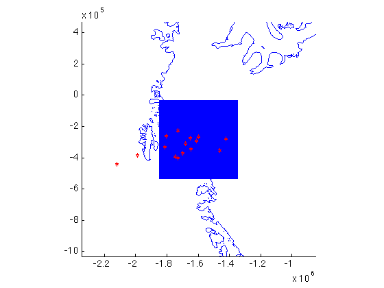
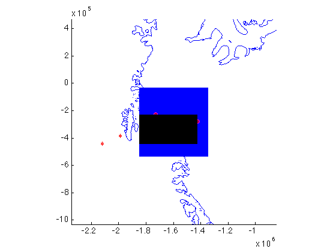

inpsquad documentation
inpsquad is part of Antarctic Mapping Tools for Matlab (Greene et al., 2017). Click here for a complete list of functions in AMT.
This function returns true for points in a polar stereographic quadrangle.
Contents
Syntax
tf = inpsquad(lat,lon,latlim,lonlim) tf = inpsquad(lat,lon,xlim,ylim) tf = inpsquad(x,y,latlim,lonlim) tf = inpsquad(x,y,xlim,ylim) tf = inpsquad(...,'inclusive') [rows,cols] = inpsquad(...)
Description
tf = inpsquad(lat,lon,latlim,lonlim) returns logical matrix tf, which is the same size as lat and lon. tf is true for all points inside the polar stereographic extents of all points in latlim, lonlim. lat and lon must be the same size. latlim and lonlim must be the same size. With this syntax, all points are converted to polar stereographic (re 71°) meters and limits are taken as the limits of the projected values before performing inpolygon calculation.
tf = inpsquad(lat,lon,xlim,ylim) as above, but data limits are defined by polar stereographic meters. Polar stereographic units are determined based on the ranges of inputs with the islatlon function.
tf = inpsquad(x,y,latlim,lonlim) Input data points can be polar stereographic meters. Polar stereographic units are determined based on the ranges of inputs with the islatlon function.
tf = inpsquad(x,y,xlim,ylim) All inputs can be polar stereographic meters. Polar stereographic units are determined based on the ranges of inputs with the islatlon function.
tf = inpsquad(...,'inclusive') includes points on the edge of the polygon defined by xlim,ylim or latlim,lonlim.
[rows,cols] = inpsquad(...) returns rows and columns of lat,lon or x,y that have any points inside the polar stereographic quadrangle. Note, a row or column needs only one point inside the quadrangle to return true for that row or column.
Example
Define a grid and some scattered data: This example includes a call to the highly-recommended antbounds function, which plots the grounding line from Mouginot et al.
[latgrid,longrid] = psgrid('pine island glacier',500,2); scatlat = -75 + 1.5*randn(15,1); scatlon = -100 + 2*randn(15,1); mapzoomps('pine island glacier','mapwidth',1500) plotps(latgrid,longrid,'b.','markersize',2) antbounds gl plotps(scatlat,scatlon,'rh')
Find all scattered points inside the polar stereographic range of the gridded points and show them as magenta circles:
in = inpsquad(scatlat,scatlon,latgrid,longrid);
plotps(scatlat(in),scatlon(in),'mo')
Or find find all gridded points inside the range of scattered points and display them as black dots:
in = inpsquad(latgrid,longrid,scatlat,scatlon);
plotps(latgrid(in),longrid(in),'k.')
 This function can be used to trim large datasets to a region of interest:
[r,c] = inpsquad(latgrid,longrid,scatlat,scatlon); trimlat = latgrid(r,c); trimlon = longrid(r,c);
Citing AMT
If this function or any other part of Antarctic Mapping Tools is useful for you, please cite the paper that describes AMT.
Greene, C. A., Gwyther, D. E., & Blankenship, D. D. Antarctic Mapping Tools for Matlab. Computers & Geosciences. 104 (2017) pp.151-157. doi:10.1016/j.cageo.2016.08.003.
Author Info
The inpsquad function and supporting documentation were written for Antarctic Mapping Tools by Chad Greene of the University of Texas at Austin's Institute for Geophysics (UTIG), September 2015.